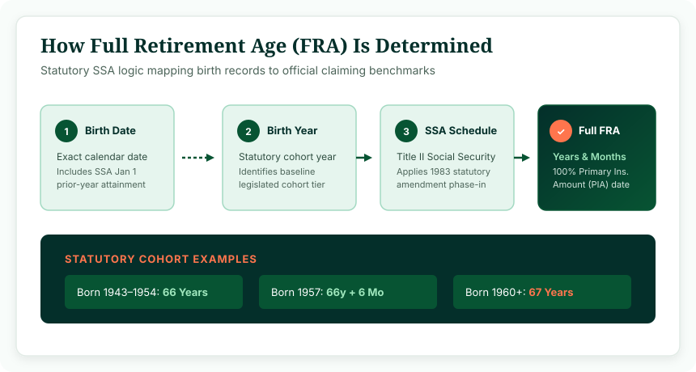
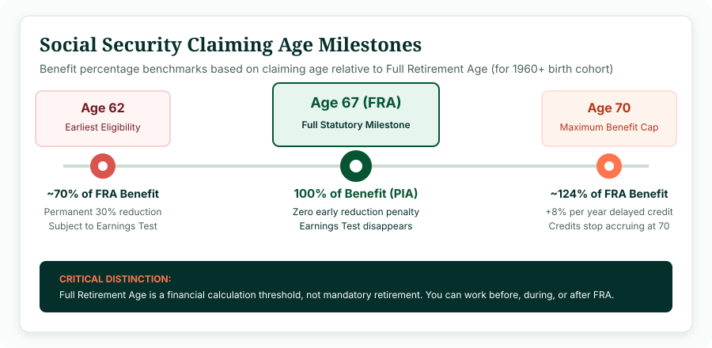

The full retirement age for Social Security is the age at which you become eligible to receive your unreduced Social Security retirement benefit (your 100% Primary Insurance Amount). Your FRA depends entirely on your year of birth. Under current federal law, if you were born in 1960 or later, your Full Retirement Age is 67. For those born between 1943 and 1954, it is 66, while individuals born between 1955 and 1959 reach FRA in gradual two-month increments between 66 and 67.
The full retirement age for Social Security is the foundational milestone used by the Social Security Administration (SSA) to determine when a worker becomes eligible for their full retirement benefit under Title II of the Social Security Act. Rather than a universal birthday shared by all Americans, your social security full retirement age depends primarily on your year of birth, currently ranging from 65 to 67 across statutory cohorts. If you are asking yourself, "what is my full retirement age?" or planning the timing of your future claims, you can calculate your milestone dates with our interactive Social Security Age Calculator.
1. What Is Full Retirement Age?
Full Retirement Age (frequently abbreviated as Social Security FRA) represents the exact chronological point where the Social Security Administration pays you 100% of your earned benefit, known technically as your Primary Insurance Amount (PIA). It is the reference baseline from which all early reductions and delayed credits are mathematically calculated.
Crucially, Full Retirement Age is a benefit calculation threshold, not a mandatory retirement age. The federal government does not compel anyone to stop working when they reach FRA. In contemporary retirement planning, individuals commonly choose between several distinct pathways:
- Claiming Early: You can choose to begin receiving retirement checks as early as age 62, accepting a permanent monthly reduction in exchange for collecting benefits over a greater number of years.
- Claiming at FRA: You can claim exactly in the month you achieve your Full Retirement Age, receiving 100% of your PIA with no early penalty and unrestricted earnings rights.
- Delaying Claims: You can delay claiming past your FRA up until age 70, earning guaranteed statutory increases known as Delayed Retirement Credits.
- Continuing Employment: You can continue working full-time or part-time regardless of whether you have claimed benefits, without facing statutory wage clawbacks once you attain FRA.
2. How Is Social Security Full Retirement Age Determined?
Under the Social Security Act of 1935, the standard retirement age was initially set at 65. However, recognizing demographic shifts, increased average life expectancies, and long-term trust fund solvency demands, Congress enacted the bipartisan 1983 Social Security Amendments. This legislation legislated a gradual, phased increase in the Full Retirement Age from 65 to 67.
The mechanism relies strictly on an individual's calendar birth year. The administrative determination follows a four-step architectural flow:

Figure 1: Statutory logic flow used by the Social Security Administration to determine claiming benchmarks.
Because the schedule is statutory, it does not fluctuate based on personal income, career longevity, health status, or marital status. Every covered worker born in the same calendar year shares the exact same Full Retirement Age requirement.
3. Social Security Full Retirement Age by Birth Year
The table below details the official statutory retirement schedule published by the Social Security Administration. To understand how your specific cohort is evaluated, locate your birth year in the schedule:
| Year of Birth | Full Retirement Age (FRA) | Earliest Claim Age (62) Reduction |
|---|---|---|
| 1937 or earlier | 65 years | 20.00% reduction (receives 80.0% of PIA) |
| 1938 | 65 years + 2 months | 20.83% reduction (receives 79.17% of PIA) |
| 1939 | 65 years + 4 months | 21.67% reduction (receives 78.33% of PIA) |
| 1940 | 65 years + 6 months | 22.50% reduction (receives 77.50% of PIA) |
| 1941 | 65 years + 8 months | 23.33% reduction (receives 76.67% of PIA) |
| 1942 | 65 years + 10 months | 24.17% reduction (receives 75.83% of PIA) |
| 1943–1954 | 66 years | 25.00% reduction (receives 75.0% of PIA) |
| 1955 | 66 years + 2 months | 25.83% reduction (receives 74.17% of PIA) |
| 1956 | 66 years + 4 months | 26.67% reduction (receives 73.33% of PIA) |
| 1957 | 66 years + 6 months | 27.50% reduction (receives 72.50% of PIA) |
| 1958 | 66 years + 8 months | 28.33% reduction (receives 71.67% of PIA) |
| 1959 | 66 years + 10 months | 29.17% reduction (receives 70.83% of PIA) |
| 1960 or later | 67 years | 30.00% reduction (receives 70.0% of PIA) |
For everyone born in 1960 or later, the Full Retirement Age has permanently reached 67 under current legislation. This includes individuals turning 62 in 2022 and all subsequent retirement cohorts.
4. Social Security Full Retirement Age Chart
Visualizing the retirement milestones clarifies how the claiming window operates in practice. While your Full Retirement Age sits at the center as the 100% benchmark, the statutory claiming spectrum spans from age 62 up to age 70:

Figure 2: The Social Security claiming spectrum and relative payout percentages for workers with an FRA of 67.
To pinpoint the exact calendar month and day you attain each of these three critical milestones, use our verified tool:
5. Full Retirement Age for 1955–1960 Birth Years
A frequent point of confusion among pre-retirees involves the transition cohort born between 1955 and 1960. Rather than implementing an abrupt leap from 66 to 67, lawmakers designed a two-month per year phase-in schedule:
- Born in 1955: Reached FRA at 66 years and 2 months (between March 2021 and February 2022).
- Born in 1956: Reached FRA at 66 years and 4 months (between May 2022 and April 2023).
- Born in 1957: Reached FRA at 66 years and 6 months (between July 2023 and June 2024).
- Born in 1958: Reached FRA at 66 years and 8 months (between September 2024 and August 2025).
- Born in 1959: Attains FRA at 66 years and 10 months (between November 2025 and October 2026).
- Born in 1960: Attains FRA at exactly 67 years in 2027.
This phased implementation is why individuals born just twelve months apart may have different retirement attainment months, even if they plan to claim in the same calendar year.
6. What Does Full Retirement Age Mean for Benefits?
Your Full Retirement Age acts as the anchor for three critical Social Security financial calculations:
A. 100% Primary Insurance Amount (PIA)
When you reach your FRA, your monthly benefit equals exactly 100% of your PIA. The SSA calculates your PIA by taking your highest 35 years of wage-indexed earnings, calculating your Average Indexed Monthly Earnings (AIME), and running that through a progressive benefit formula. At FRA, no percentage deductions or bonus multipliers are applied.
B. Permanent Early Claiming Penalties
If you choose to receive retirement benefits before your FRA, the SSA permanently reduces your monthly check. The reduction is calculated on a monthly pro-rata basis: 5/9 of 1% for each of the first 36 months before FRA, and 5/12 of 1% for each additional month up to 24 months earlier. For someone with an FRA of 67 claiming at 62, this equates to a permanent 30% reduction.
C. Elimination of the Retirement Earnings Test
If you collect Social Security before your Full Retirement Age and continue to work, your benefits are subject to the Retirement Earnings Test (RET). If your earned wages exceed the annual statutory threshold, the SSA temporarily withholds $1 in benefits for every $2 or $3 earned above the limit. However, in the month you attain Full Retirement Age, the earnings test disappears entirely. You can earn an unlimited salary without losing a single dollar of your monthly Social Security benefit.
7. Can You Claim Social Security Before Full Retirement Age?
Yes. The earliest age at which an eligible worker can claim Social Security retirement benefits is age 62. However, there are trade-offs to consider before deciding on early claiming:
- Lifetime Reduction: The reduction is permanent. Your benefit does not reset to 100% when you turn 66 or 67. The smaller monthly base will also produce smaller dollar increases from future Cost-of-Living Adjustments (COLAs).
- Spousal Benefit Impact: If your spouse eventually receives survivor benefits based on your earnings record, claiming early permanently locks in a lower maximum survivor payout for them.
- Earlier Cash Flow: Claiming at 62 provides up to 60 additional monthly checks before age 67, which can be critical for individuals facing poor health, physical job demands, or unemployment.
8. What Happens If You Wait Until After Full Retirement Age?
If you choose not to claim benefits at your FRA, your monthly payout continues to grow through Delayed Retirement Credits (DRCs):
Statutory Delayed Retirement Credit Rate
Credits accrue starting in the month you reach your Full Retirement Age and continue up until the month you reach age 70.
For individuals with a Full Retirement Age of 67 who delay claiming until age 70, their monthly benefit increases by 24% (36 months × 2/3 of 1% = 24%). If your unreduced monthly benefit at 67 is $2,000, waiting until 70 elevates your starting check to $2,480 per month for life, adjusted for inflation.
There is no financial benefit to delaying claims past age 70. Delayed retirement credits stop accruing at age 70, meaning waiting any longer results in permanently forfeited payments.
9. Is Full Retirement Age the Same as Retirement Age?
No. In personal finance discussions, people frequently conflate the two concepts, but they represent entirely different events:
- Full Retirement Age: A statutory, mathematical benchmark established under federal law that governs how the SSA calculates your monthly entitlement checks.
- Personal Retirement Age: The personal calendar date on which you decide to stop working or transition away from full-time employment.
You can retire from your job at age 55 and live off personal savings, deferred pensions, or 401(k) assets without touching Social Security until 67 or 70. Conversely, you can claim Social Security at 62 and continue working a demanding corporate job, or work well past 70 while collecting full Social Security checks. You control when you stop working; the law dictates your FRA.
10. Is Full Retirement Age the Same as Medicare Age?
No. This is one of the most widespread and potentially costly misconceptions in retirement planning. While the Social Security Full Retirement Age has moved up to 66 and 67, Medicare eligibility remains fixed at age 65 for the vast majority of Americans.
If you wait to claim Social Security until age 67, you must still proactively enroll in Medicare Part A and Part B around your 65th birthday (during your Initial Enrollment Period), unless you have qualifying creditable coverage through active group employment. Failing to enroll at 65 can trigger permanent lifelong Medicare Part B late enrollment penalties.
11. How to Calculate Your Social Security Full Retirement Age
Determining your exact FRA date involves five chronological calculation steps:
- Confirm Your Full Birth Date: Note your exact day, month, and year of birth.
- Check the January 1 Attainment Rule: If you were born on January 1, determine whether your statutory age milestone falls on December 31 of the previous year.
- Identify Your Statutory Cohort: Map your birth year against the SSA Title II schedule to find your required years and months.
- Add FRA Months to Your Birth Date: Project forward from your birth date by adding the full years and transition months.
- Determine the First Check Date: Note that Social Security benefits are paid in the month following the month of entitlement (e.g., benefits earned for June are paid in July).
Rather than performing multi-step calendar arithmetic manually, you can use our dedicated Social Security Age Calculator to generate an instant timeline.
12. Practical Calculation Examples
Here are four concrete examples illustrating how the rules apply across different birth cohorts:
Example 1: Born June 15, 1954
Statutory Cohort: 1943–1954 birth tier.
Full Retirement Age: 66 years exactly.
FRA Attainment Date: June 15, 2020. At age 66, this individual achieved 100% unreduced benefits and unlimited earnings rights.
Example 2: Born March 20, 1957
Statutory Cohort: 1957 phase-in tier.
Full Retirement Age: 66 years and 6 months.
FRA Attainment Date: September 20, 2023. If this individual claimed at 62, their benefit suffered a 27.5% reduction. Reaching FRA restored full 100% PIA rights.
Example 3: Born August 10, 1959
Statutory Cohort: 1959 phase-in tier.
Full Retirement Age: 66 years and 10 months.
FRA Attainment Date: June 10, 2026. This individual attains FRA in 2026, locking in full entitlement two months before their 67th birthday.
Example 4: Born November 14, 1962
Statutory Cohort: 1960 or later tier.
Full Retirement Age: 67 years flat.
FRA Attainment Date: November 14, 2029. If claiming at 62 (November 2024), their benefit was reduced by 30%. At 70 (November 2032), their payout increases by 24% over PIA.
13. What If You Were Born on January 1?
One of the most nuanced edge cases in federal retirement law is the treatment of individuals born on the first day of the year. Under the Social Security Administration's Program Operations Manual System (POMS GN 00302.010), a person legally attains an age on the day before their calendar birthday.
Therefore, if you were born on January 1, 1960, the law considers you to have attained age 62, 66, or 67 on December 31 of the previous year. For Full Retirement Age determination, someone born on January 1, 1960 is treated as having been born in 1959! Their FRA is therefore 66 years and 10 months, not 67.
Our Social Security Age Calculator natively accounts for this POMS legal attainment rule, ensuring that January 1 birthdays receive exact statutory results.
What Is Your Full Retirement Age?
Enter your birth date in our verified calculator to view your Full Retirement Age, your earliest eligibility date at 62, your age 70 milestone, and your complete claiming timeline.
Calculate My Social Security Retirement Age →14. Frequently Asked Questions
What is Full Retirement Age for Social Security?
Full Retirement Age (FRA) is the statutory milestone at which a worker qualifies to receive 100% of their Primary Insurance Amount (PIA) without early claiming reductions under Social Security Administration rules.
What is my Social Security Full Retirement Age?
Your Social Security Full Retirement Age is determined strictly by your year of birth. For individuals born between 1943 and 1954, FRA is 66. For those born between 1955 and 1959, FRA increases by 2 months per year. For individuals born in 1960 or later, FRA is 67.
Is Social Security retirement age 65 or 67?
It depends on your birth year. The original FRA was age 65 for workers born in 1937 or earlier. The 1983 Social Security Amendments phased in gradual increases, so workers born in 1960 or later have a Full Retirement Age of 67.
What is full retirement age for someone born in 1959?
The current SSA statutory schedule establishes an FRA of 66 years and 10 months for individuals born in 1959.
What is full retirement age for someone born in 1960?
The Full Retirement Age for people born in 1960 or later is exactly 67 years.
Can I claim Social Security before Full Retirement Age?
Yes. Covered workers can begin collecting retirement benefits as early as age 62. However, claiming before your Full Retirement Age permanently reduces your monthly check by up to 30%.
Can I claim Social Security after Full Retirement Age?
Yes. If you delay claiming benefits past your Full Retirement Age, you earn Delayed Retirement Credits (DRCs) of 8% per year (two-thirds of 1% per month) until you reach age 70.
Does Full Retirement Age mean I have to stop working?
No. Full Retirement Age is solely a benefit calculation milestone. There is no requirement to leave the workforce. In fact, once you reach FRA, the Social Security Retirement Earnings Test no longer applies, meaning you can earn unlimited wages with zero benefit withholding.
Is Full Retirement Age the same as Medicare age?
No. Medicare eligibility begins at age 65 for most Americans, regardless of your birth year or Social Security Full Retirement Age.
What if I was born on January 1?
Under SSA regulations (POMS GN 00302.010), an individual born on January 1 attains their age on December 31 of the previous year. Consequently, someone born on January 1 uses the statutory FRA schedule for the prior birth year.
17. Reviewed & Methodology
This article explains Social Security Full Retirement Age using the official birth-year schedule published by the Social Security Administration under Title II of the Social Security Act (42 U.S.C. § 416(l)).
- Statutory Reference: Social Security Act Section 216(l); 20 C.F.R. § 404.409; Social Security Administration Program Operations Manual System (POMS) GN 00302.010.
- Calculation Methodology: Age benchmarks are determined strictly based on birth cohorts, incorporating legal age attainment on the day prior to birth for January 1 birthdays.
- Important Disclaimer: This guide provides chronological and statutory educational analysis. It does not provide individualized tax, legal, or financial advice. Individual benefit amounts depend on personal earnings records maintained by the Social Security Administration.
- Last Editorial Review: October 2026 by Navjeet Kamboj.